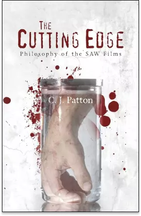
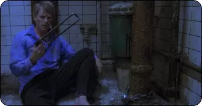
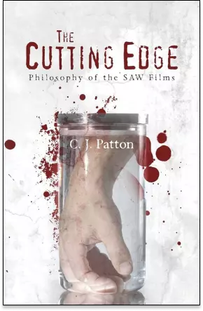
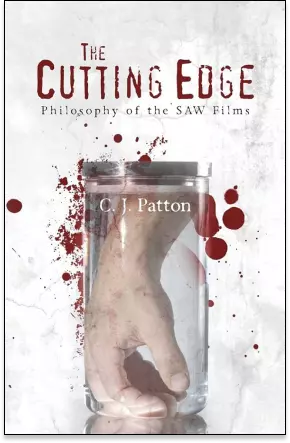

"The Cutting Edge": Décryptage Philosophique de Saw

En 2013, l'auteur C.J. Patton a plongé profondément dans l'univers tordu et complexe de la franchise cinématographi-que
"Saw" avec son livre intitulé "The Cutting Edge: Philosophy of the SAW Films". Ce livre a été acclamé par les amateurs
de philosophie et de cinéma d'horreur, car il explore les thèmes et les questions philosophiques soulevés par la saga,
créant ainsi une analyse fascinante et approfondie de cette série emblématique.
LA FRANCHISE "SAW" COMME POINT DE DEPART
En 2013, l'auteur C.J. Patton a plongé profondément dans l'univers tordu et complexe de la franchise cinématogra-phique
"Saw" avec son livre intitulé "The Cutting Edge: Philosophy of the SAW Films". Ce livre a été acclamé par les amateurs
de philosophie et de cinéma d'horreur, car il explore les thèmes et les questions philo-sophiques soulevés par la saga,
créant ainsi une analyse fascinante et approfondie de cette série emblématique.
UNE ANALYSE EN PROFONDEUR DES PERSONNAGES
L'un des aspects les plus impressionnants du livre est la manière dont l'auteur analyse en profondeur les personnages
clés de la série, en mettant particulièrement l'accent sur John Kramer, alias Jigsaw. Il décortique les motivations et
les justifications de Jigsaw pour ses actions, examinant comment un homme torturé par sa propre expérience de la mort
peut devenir un juge moral auto-proclamé.
UNE ANALYSE PSYCHOLOGIQUE PROFONDE
Le livre de Patton examine également la psychologie des victimes de Jigsaw et les choix difficiles auxquels elles sont
confrontées. Il explore les limites du comportement humain sous la menace de la mort imminente et comment les
personnages de la franchise réagissent à ces situations extrêmes.

Scène ou Lawrence Gordon doit faire un choix difficile
La philosophie abordée dans ce livre n'est pas seulement une analyse théorique, mais elle offre également une
perspective nou-velle et intrigante sur la saga, enrichissant ainsi l'expérience de visionnage pour les fans de la
série.
UN INCONTOURNABLE DANS LE MILIEU PHILOSOPHIQUE
Cet ouvrage est donc incontournable pour les amateurs de philosophie, de cinéma d'horreur et de la franchise "Saw" pour
ceux qui cherchent à explorer les coins les plus sombres de la philosophie à travers l'objectif de l'horreur.
 
